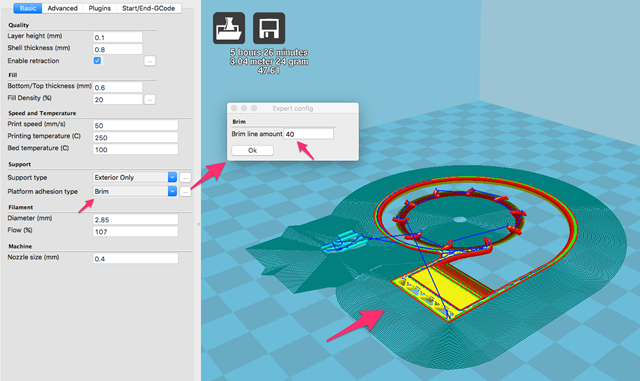
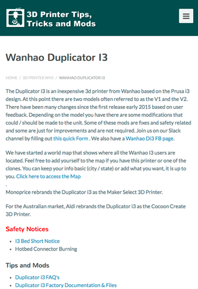
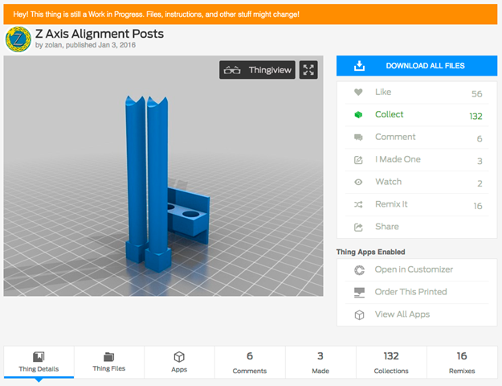
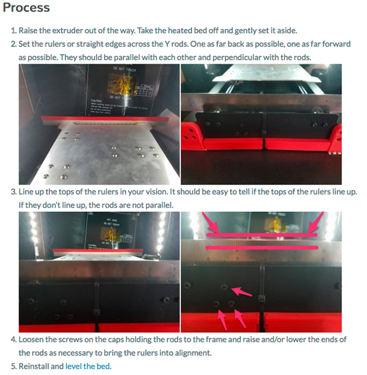

今まで、PLA ばかりでプリントしていたので、今度は ABS でプリントにチャレンジ。
温度が少し高いようで、フィラメントを溶かす温度は250度くらいのようです。フィラメントの温度範囲は、220-260度と記載。かなり熱いですね。
フィラメントが溶けるのは問題ないのですが、ベットの温度も100度くらいにしないとプリントしたモノにそりが発生。周辺サポートをつけると(Brim)ベットに固着しない部分がはっきりわかるんですよね。

ABS のプリントは、90度～110度にベットを熱するのでベットのフラットな面を作るのが結構厄介でした。ヒートベットにガラスを乗っけようとただいま、注文中。
あと、ABS をプリントしようとフィラメントを交換したとき、手順が悪かったのかノズルに通りが悪くなったようです。半づまり状態という感じで、プリントしたものがスカスカな感じになります。こちらは、先に0.2mm ノズルもテストしようとしていたときに 0.4mm ノズルも注文しているので少し待ち状態。0.4mm のピアノ線で貫通させればよいとのノウハウがあるんですが、手元にないしノズルよりピアノ線のほうが高いので、様子見。何か代用できる 0.4mm の硬い金属はありませんかね。
あと、ABS や PLA フィラメントを交換しようとあれこれやっているときにフィラメント送りに完全に詰まってしまって、こちらも分解。あれこれやっている内に、Wanhao i3 のノウハウがあるサイトを見つけたのでメモしておきます。
3dprinterwiki.info Tips and Mods
http://3dprinterwiki.info/wiki/wanhao-duplicator-i3/

ここで知ったのですが、Wanhao USA の注意喚起にヒートベットからショートして火災が発生するケースがあるとの事。
WanhaoUSA Duplicator i3 Safety Notice
http://wanhaousa.com/pages/duplicator-i3-safety-notice
ファイバーワッシャーをかませてる感じです。テフロンのワッシャーをゲット予定（3000円配送無料まで何か買うまで保留）
ワッシャー TT(テフロン) 0306-10 (3.2mm内径 x 6mm外形 x 1mm厚)
https://www.monotaro.com/p/4213/5712/?t.q=%91%CF%94M%90%AB
で、話を元にもどしてノウハウ集。ABS をプリントアウトして初めて気がついたのですが、ベットがフラットになっていないようでした。
症状としては、
・周辺サポートの初期層が、ベットに付着しない。
・ベットに固着せず、ヘッド周りに、フィラメントが残る部分がある。
・第2層目にプリントするときに、プリントヘッドが1層目をかする。
PLAのときは、適当でもプリントできましたが、ABS はなかなか手ごわいです。まずはこのフラット対策をしていこうと思います。
基本の調整はベットの4墨にあるネジを調整してフラット化。以下を参考に。
ベットのフラット化
http://3dprinterwiki.info/wiki/wanhao-duplicator-i3/duplicator-i3-calibration/bed-leveling/
OEM の cocoon create が作っているビデオがわかりやすいです。圧力センサーを付けて、計測するっていうのもありですかね。まぁ、そのうちカスタマイズすることに。
[youtube https://www.youtube.com/watch?v=k7lmUywqOd4]
あとは、ベットをフラットにするとき、前提として、Y軸と Z 軸のアライメントが必要です。Z軸は、以下の棒をプリントして左右の高さを調整。

Y軸は、以下のように定規を２つ置いて高さを平行に。調整は、以下のように定規を２つY軸に置いて水平になっているか確認。調整はネジの閉めなおし。
 X Y Z を固定するのはやはり、以下の固定するカスタムが有利そうです。これは必須カスタムですね。
Z-Brace
http://3dprinterwiki.info/wiki/wanhao-duplicator-i3/duplicator-i3-basic-mods/z-brace/
8mm の寸切ボルト（threaded rod）でいいようです。長さは、406mm が2本必要のようでモノ太郎で 1m のをゲット。ステンレス（SUS310S）を採用。鉄だと、300円ちょいですがね。1400円。ところで、ナイロックナット（nylock nuts）って、ナイロンナットっていうのが通り名称なんですかね。
メーター寸切(SUS310S)
https://www.monotaro.com/p/4429/4826/
六角ナット1種(ステンレス)
https://www.monotaro.com/p/0552/8747/
ナイロンナット 2種(ステンレス)(パック品)
https://www.monotaro.com/p/4210/5707/?t.q=%83i%83C%83%8D%83b%83N%83i%83b%83g
M3 x 20mm 6角ソケット
240pcs/box M3 Screw Kits DIN912 Hex Socket Head Cap Screw Black M3*4/5/6/8/10/12/16/20/25mm
ラバー（切って両面テープがついたタイプ）
2pcs 9.8cmx15cm Black Adhesive rubber
モノタロウはあと、送料無料まで、あと600円ですか。THK のリニアブッシュを１つ買ってみてよかったら、交換してみることに。
0.4mｍのノズルを掃除するために、ピアノ線を探してたんですが、モノタロウでは見つからなかったので、火口掃除針っていうのをためしてみることに。
なかなか奥が深いですね。3D Print。フィラメント交換が面倒なので、PLA用に一台自作してみるのもいいかもしれません。Ultimaker が オープンソースなんで。